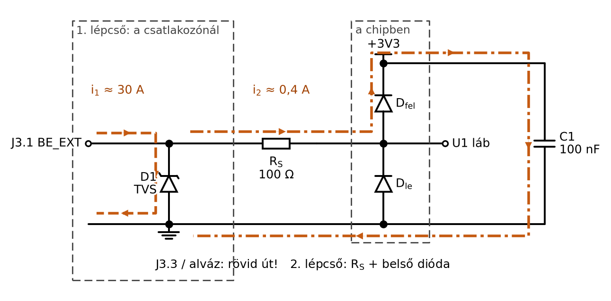
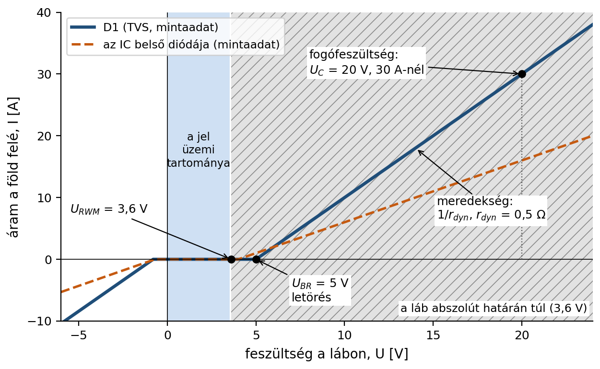
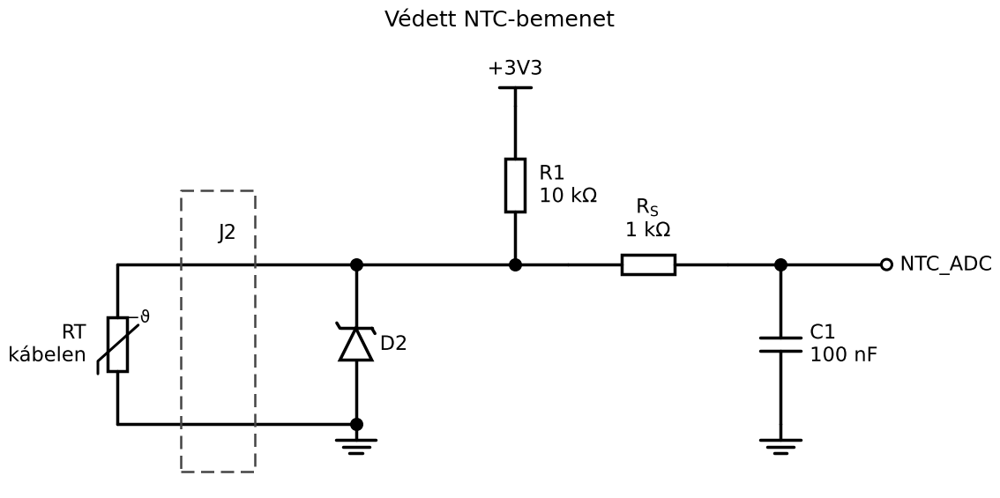

Ennek az alfejezetnek a végére:
Építünk az Elektrosztatikus kisülés (ESD), az Egyenirányítás, védő- és fogókapcsolások, Schottky-dióda, a Szintillesztés, bemenetvédelem és pergésmentesítés és a Zajszűrés: RC, LC, ferrit, közös módusú fojtó, árnyékolás anyagára.
A szenzormodul J3 csatlakozóján egy külső jel (BE_EXT) érkezik a mikrovezérlő egyik bemenetére. Egy téli napon valaki bedugja a kábelt, a modul újraindul, hetekkel később pedig a bemenet „megbolondul”. A feltöltött ember keze néhány kilovoltot vitt a csatlakozóra, és a lábba épített apró védődióda olyan áramot kapott, amelyre nem tervezték. A sérülés lehet látens: nem azonnal látszik (Elektrosztatikus kisülés (ESD)).
Ugyanezen a modulon másfajta lökés is érhet: relé kapcsolásakor a kábeleken impulzuscsomagok jelennek meg, egy hosszú kültéri tápvezetéken pedig közeli villám sokkal nagyobb energiát hozhat. Mindegyikhez más védelem kell.
Gondolkodj előre: egy védődióda 30 A-nél 20 V-on „fog”. A diódát egy 1 cm-es vezeték köti a földre (kb. 10 nH), az áram kb. 0,8 ns alatt nő 30 A-re. Mekkora feszültség lehet a csatlakozón?
A védelem olyan, mint a túlfolyó egy tartályon: normál szint alatt zárva, nem zavarja a használatot; fölötte kinyit, és a fölösleget a lefolyóba vezeti. A hasonlat korlátja éppen a lényeg: itt a „lefolyó” egy induktivitás, amelyen a gyorsan változó áram feszültséget ejt, és a túlfolyó sem tartja pontosan a szintet, hanem az árammal együtt emelkedik.
A kérdésre a válasz: az induktivitáson V esik, a dióda 20 V-ján felül. A rövid vezeték nem „elhanyagolható”.
Ezért a védelmet két lépcsőben építjük: egy erős, kis induktivitású útra kötött védőelem a csatlakozónál elvezeti az áram zömét, utána egy soros elem akkorára fogja a maradékot, hogy az IC saját belső diódái elbírják.

Az Elektrosztatikus kisülés (ESD) a HBM (emberi test modell) vizsgálatot ismertette: 100 pF és 1,5 kΩ, amely az alkatrész kezelését modellezi (ellenőrizendő: ANSI/ESDA/JEDEC JS-001). A készülék csatlakozóját érő kisülés vizsgálata más: az IEC 61000-4-2 egy 150 pF-os kondenzátort süt ki 330 Ω-on át, érintéses vagy levegőn át történő kisüléssel, és az első áramcsúcs kb. 3,75 A/kV (ellenőrizendő: IEC 61000-4-2 hatályos kiadása; a vizsgálati szinteket a termékszabvány adja). A könyv impulzusa ezekre épülő saját közelítés, nem a szabvány hullámalakja.
8 kV-os példánkban:
Az IC adatlapjának HBM-osztálya ezért nem mondja meg, hogy a készülék átmegy-e a csatlakozón végzett vizsgálaton (Az adatlap olvasása).
Definíció. A TVS (transient voltage suppressor, tranziens-elnyomó dióda) olyan letörési diódaszerű elem, amelyet rövid, nagy áramú impulzusok elvezetésére méreteznek. Az ESD-védő ennek kis kapacitású, jelvonalra szánt változata.
| Jel | Paraméter | Mit kell ellenőrizni |
|---|---|---|
| zárási (üzemi) feszültség | legyen legalább a vonal legnagyobb üzemi feszültsége | |
| letörési feszültség adott kis áramnál | itt kezd érdemben vezetni | |
| fogófeszültség adott impulzusáramnál | ezt látja a mögötte lévő áramkör | |
| dinamikus ellenállás | a karakterisztika meredeksége nagy áramnál | |
| kapacitás | a jel sebességéhez elég kicsi-e | |
| szivárgóáram alatt | analóg pontosság, fogyasztás | |
| irány | egyirányú vagy kétirányú | negatívba is lengő jelhez kétirányú |
Nagy áramon jó közelítés a törtvonal:
dimenzió: V + Ω·A = V. Az adatlap értékét gyakran µs-os impulzusra adja; ESD-hez a TLP (transmission line pulse: rövid, kb. 100 ns-os négyszögimpulzusokkal felvett karakterisztika) szerinti a használhatóbb adat (adatlapfüggő).

Az ábra legfontosabb üzenete: a fogófeszültség (20 V) messze a láb abszolút határa fölött van. A TVS egyedül nem tartja a lábat a határon belül.
A kiválasztás sorrendje: (1) a vonal legnagyobb feszültsége fölött, tűréssel (a 3,3 V-os jel 5%-os sínnel 3,47 V-ig mehet); (2) polaritás; (3) a jelsebességhez; (4) a pontossághoz; (5) a várt áramnál, és mögötte a maradék védelem; (6) a megengedett impulzusáram és -energia. Nagy sebességű adatvonalra (például USB vagy Ethernet) kis kapacitású védőtömb való (kis kapacitású diódák a sínekre és egy közös TVS), az interfész előírása szerinti kapacitással (ellenőrizendő: interfészleírás).
A kisülő áramnak is visszatérő útja van: a TVS-en át az alvázhoz vagy a földhöz. A csatlakozón megjelenő feszültség
ahol a TVS ágának (vezeték, kivezetés, földbekötés) induktivitása. Az ESD-nél A/ns, tehát minden nanohenry kb. 37 V. Ha 1 nH/mm-rel becslünk (mintaadat), egy milliméternyi felesleges út is számít. A felfutási idő itt is dönt, nem az energia.
Ebből következik az elhelyezés elve: a TVS közvetlenül a csatlakozónál legyen, a jel a védőelem lábán keresztül haladjon tovább (ne hosszú leágazáson), a földbekötése pedig rövid és széles legyen az alváz vagy a csatlakozó földlába felé. Így a nagy áram nem jut be a modul belsejébe, ahol közös impedancián és áthalláson át mást zavarna (Csatolási mechanizmusok és áthallás, Földelési stratégiák és visszatérő áramutak).
A TVS után a csatlakozón még mindig tíz–néhány tíz volt van. A mikrovezérlő lábán lévő belső diódák (Egyenirányítás, védő- és fogókapcsolások, Schottky-dióda) kb. -nél nyitnak. A közéjük tett szabja meg az áramukat:
ahol a belső dióda nyitási küszöbe (a láb és a föld között mérve) és a dinamikus ellenállása (mintaadat: 4 V és 1 Ω). Szavakkal: a soros ellenállás a nagy feszültségkülönbséget kis árammá alakítja.
Mit fogadunk el? Az abszolút határérték (például V … V) egyenáramú határ, nanoszekundumos impulzusra az adatlap ritkán ad értéket. Ha a lábon a belső dióda 4,4 V-ot tart, az a DC-határ fölött van; gyakorlati kritérium, hogy a beinjektált áram jóval kisebb legyen, mint amit a chip saját ESD-vizsgálata kibír (HBM 2 kV: kb. 1,3 A). Ez durva összehasonlítás, mert az impulzus alakja más, és a végső igazolás a vizsgálat; a szimuláció nem mérés. Ha a lábat a határon belül kell tartani, külső, alacsonyabb küszöbű fogódióda (Schottky a sínre) vagy nagyobb kell.
A másik hatás a tápsín felhúzása: a belső felső diódán átfolyó töltés a sín kondenzátorán emelkedést ad. Ferritgyöngy is lehet soros elem, de nagy impulzusáramnál telítődik (Valós induktivitás és ferritgyöngy); az ellenállás kiszámíthatóbb.
Az ábra jobb alsó panelje a lényeg: 100 Ω-mal és rövid visszaúttal a belső dióda árama a HBM-szint alatt marad, néhány nanohenry fölött viszont már nem.
Az és a kapacitások a jelet is lassítják: (Elsőrendű szűrők, sávszélesség és felfutási idő). Lassú jelnél viszont érdemes szűrőt is tenni a lépcső után. Az NTC-csatlakozónál a soros 1 kΩ és a 100 nF szinte eltünteti az impulzust: a kondenzátorra csak a kevés töltés jut.

Az R1 az NTC-csomópontban marad: ha a soros ellenállás az R1 és az NTC közé kerülne, a mérésbe számítana. Két ár van: a szűrő -ja 1 kΩ-mal nő, így a határfrekvencia 25 °C-on 318 Hz helyett 265 Hz; és a TVS szivárgása az osztó ellenállásán hibát okoz (0,1 µA · 5 kΩ = 0,5 mV, 5 µA már 25 mV).
| ESD | gyors tranziens (burst, EFT) | túlfeszültség (surge) | |
|---|---|---|---|
| jellemző ok | feltöltött ember vagy tárgy | induktív terhelés kapcsolása | közeli villám, nagy teljesítményű kapcsolás |
| időskála | ns felfutás, ~100 ns | ns-os impulzusok sorozatban, csomagokban | µs felfutás, több tíz µs vagy tovább |
| energia | kicsi | impulzusonként kicsi, sokszor ismétlődik | nagy |
| út | csatlakozó, burkolat | kábelekre, gyakran kapacitívan | táp- és hosszú jelvezetékek |
| tipikus védelem | TVS + soros elem, rövid út | RC- vagy közös módusú szűrő, TVS, hibatűrő szoftver | gázkisülő cső vagy varisztor, soros impedancia, TVS |
| alapszabvány (értékek ellenőrizendők) | IEC 61000-4-2 | IEC 61000-4-4 | IEC 61000-4-5 |
A táblázat időskálái nagyságrendi tájékoztatók (ellenőrizendő: a megfelelő alapszabvány).
A varisztor (MOV) feszültségfüggő ellenállás: nagy energiát bír, de nagy a kapacitása, és ismételt terheléstől öregszik. A gázkisülő cső (GDT) nagy áramot vezet kis kapacitás mellett, de lassan gyújt, és gyújtás után alacsony feszültségen vezet tovább, ezért az utána folyó áramot korlátozni kell. Lépcsős védelemnél a durva elem elöl, a gyors, finom (TVS) hátul van, közöttük soros impedanciával, hogy az energia az elöl lévő elemre jusson. A villámvédelem és a hálózati oldal nem témánk.
A különbség energiában látható. A modul saját tesztimpulzusa (30 V, 1 ms, 2 Ω; nem szabványi) egy 12 V-os bemeneti TVS-en (mintaadat: = 20 V, = 0,5 Ω) A-t, 22 V fogófeszültséget és kb. 88 mJ elnyelt energiát jelent (a bemeneti puffer kondenzátort figyelmen kívül hagyva), miközben az ESD-példában a TVS-re kb. 12 µJ jut. A bemeneti TVS méretezése a Tápbemeneti védelmek: biztosíték, polaritás, túlfeszültség, áramlökés témája.
A hot-plug tüske (RLC tranziens: csillapítás és túllövés) harmadik eset: 1 µH, 50 mΩ vezeték és 10 µF 12 V-ról 21,1 V-ot ad. Itt elsőként a csillapítás segít (0,39 Ω soros ellenállással 12,5 V, 100 µF + 0,33 Ω ággal 12,85 V); a TVS csak tartalék.
A rajzra írandó megjegyzés például: „D1 a J3 csatlakozónál, a BE_EXT vezeték D1 lábán halad át; D1 földje a lehető legrövidebb úton a J3.3-hoz/alvázhoz. R_S D1 és U1 között. A védett és a védetlen vezeték ne fusson egymás mellett.” Ugyanez a gondolkodás érvényes a LOAD kimeneti csatlakozóra is.
Továbbvitt eredmény. Interfészvédelem: a vonal feszültsége fölött; ; a TVS a csatlakozónál, rövid visszaúttal (); utána soros elem, amely a belső diódák áramát korlátozza. Ezt a Kapcsolási rajz konvenciói és a NYÁK-tervezőnek átadott kényszerek, a Tervezési átvizsgálás és átadás a NYÁK-tervezésnek, a 2. záróprojekt: érzékelő-illesztő és mérőlánc és a 3. záróprojekt: MOSFET-es meghajtó induktív terheléshez használja.
Továbbvitt eredmény. ESD (ns, kis energia, nagy áram), burst (ismétlődő ns-os impulzusok) és surge (µs-os, nagy energia) más védelmet kíván. Erre a Követelményektől a blokkdiagramig és a Tervezési átvizsgálás és átadás a NYÁK-tervezésnek épít.
Adatok (mintaadat): 3,3 V-os digitális bemenet, 1 Mbit/s, 50 Ω-os forrás; D1 egyirányú ESD-védő: = 3,6 V, = 5 V, = 0,5 Ω, = 15 pF; U1 lába: abszolút határ 3,6 V, HBM 2 kV, = 5 pF; = 1 nH; vizsgálófeszültség példaként 8 kV.
Józanész-ellenőrzés: induktivitás nélkül (0,1 nH) a belső diódára 0,16 A, a 30 A kb. 0,5%-a jut: ez éppen az arány. A többlet 1 nH-nél az induktivitás műve.
A hálózatot az elkit.transient modul szimulálja
törtvonalas diódamodellekkel. Független ellenőrzés az
elkit.emc beépített ESD-modellje (az
esd_response függvény).
import numpy as np
from elkit import emc, transient as tr, units
def esd_kor(r_s=100.0, l_v=1e-9, c_lab=5e-12, u=8e3, t_end=300e-9, dt=20e-12):
c = tr.Circuit()
c.add_isource("I1", "0", "cs", lambda t: emc.esd_current(t, u))
c.add_capacitor("C_cs", "cs", "0", 1e-12)
c.add_inductor("L_v", "cs", "d", l_v)
c.add_diode("D1", "0", "d", u_f=0.8, r_on=0.5, u_br=5.0, r_br=0.5)
c.add_capacitor("C_D", "d", "0", 15e-12)
c.add_resistor("R_S", "cs", "lab", max(r_s, 1e-3))
c.add_capacitor("C_lab", "lab", "0", c_lab)
c.add_diode("D_IC", "0", "lab", u_f=0.7, r_on=1.0, u_br=4.0, r_br=1.0)
return c.simulate(t_end, dt, method="be")
print(" R_S csatl. láb lábáram sín (100 nF) E_TVS")
for r_s in (0, 10, 100, 1000):
r = esd_kor(r_s)
i = -r.i("D_IC")
du = np.trapezoid(i, r.t) / 100e-9
print(f"{r_s:5.0f} {r.v('cs').max():6.1f} V {r.v('lab').max():5.1f} V "
f"{units.fmt(i.max(), 'A'):>8} {du:9.2f} V {r.energy('D1')[-1] * 1e6:8.1f} µJ") R_S csatl. láb lábáram sín (100 nF) E_TVS
0 22.5 V 22.5 V 18.5 A 5.38 V 5.7 µJ
10 42.6 V 7.5 V 3.51 A 0.78 V 11.5 µJ
100 45.0 V 4.4 V 405 mA 0.09 V 12.5 µJ
1000 45.2 V 4.0 V 40.6 mA 0.01 V 12.6 µJMost a visszatérő út induktivitása, = 100 Ω mellett:
for l_v in (0.1e-9, 1e-9, 5e-9, 10e-9):
r = esd_kor(l_v=l_v, t_end=60e-9)
t = np.arange(0, 60e-9, 20e-12)
e = emc.esd_response(t, emc.esd_current(t, 8e3), r_series=100.0, l_return=l_v,
tvs=emc.Clamp(u_br=5.0, r_dyn=0.5, c=15e-12))
print(f"L_v = {l_v * 1e9:4.1f} nH: csatlakozó {r.v('cs').max():5.1f} V "
f"(emc: {e.u_connector.max():5.1f}), lábáram {(-r.i('D_IC')).max():.2f} A")L_v = 0.1 nH: csatlakozó 20.4 V (emc: 20.4), lábáram 0.16 A
L_v = 1.0 nH: csatlakozó 45.0 V (emc: 45.0), lábáram 0.41 A
L_v = 5.0 nH: csatlakozó 178.4 V (emc: 178.4), lábáram 1.73 A
L_v = 10.0 nH: csatlakozó 349.2 V (emc: 349.2), lábáram 3.42 AVégül az NTC-bemenet és a saját tesztimpulzus a 12 V-os TVS-en:
r = esd_kor(r_s=1000, c_lab=100e-9, t_end=1e-6, dt=50e-12)
print(f"NTC-bemenet: a 100 nF-on {r.v('lab').max() * 1e3:.0f} mV emelkedés")
s = tr.Circuit()
s.add_vsource("U1", "be", "0", lambda t: 30.0 if t < 1e-3 else 0.0)
s.add_resistor("R_f", "be", "a", 2.0)
s.add_diode("D3", "0", "a", u_br=20.0, r_br=0.5)
q = s.simulate(1.2e-3, 1e-6, method="be")
print(f"tesztimpulzus: {-q.i('D3').min():.1f} A, {q.v('a').max():.1f} V, "
f"{q.energy('D3')[-1] * 1e3:.0f} mJ a TVS-ben")NTC-bemenet: a 100 nF-on 30 mV emelkedés
tesztimpulzus: 4.0 A, 22.0 V, 88 mJ a TVS-benA csatlakozót érő ESD néhány ns alatt több tíz ampert hajt (kb. 30 A 8 kV-on, saját modell). A TVS alatt zár, fölötte -re fog, ami rendszerint messze a láb abszolút határa fölött van. A visszatérő út -jén nanohenrynként kb. 37 V esik, ezért a védelem a csatlakozónál, rövid úton ül. A soros ellenállás a belső diódák áramát korlátozza (100 Ω-mal 18,5 A helyett 0,4 A), a lassú jelen kondenzátorral kiegészítve szinte eltünteti az impulzust. A burst ismétlődő gyors impulzussorozat, a surge sokkal nagyobb energiájú, µs-os esemény: más elem és méretezés kell hozzájuk. A szimuláció becslés, a megfelelést vizsgálat igazolja.
mJ, , A.
V; még így is 3,6 V fölött.
: 5 nH-n kb. 190 V, 0,5 nH-n kb. 19 V.
Ω, E24: 270 Ω. ns, 1 Mbit/s-nál rendben.
Sorban végigpróbáljuk:
from elkit import eseries
for r_s in [m * 100 for m in eseries.series_values("E24") if m < 4.8]:
i_max = (-esd_kor(r_s=r_s, t_end=60e-9).i("D_IC")).max()
if i_max <= 0.2:
print(f"R_S = {r_s:.0f} Ω: lábáram {i_max * 1e3:.0f} mA")
breakR_S = 220 Ω: lábáram 186 mAA szimuláció már 220 Ω-mal teljesíti a célt; a kézi becslés (270 Ω) óvatosabb, mert a TVS- és az induktivitás-csúcsot egyszerre feltételezte.